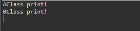
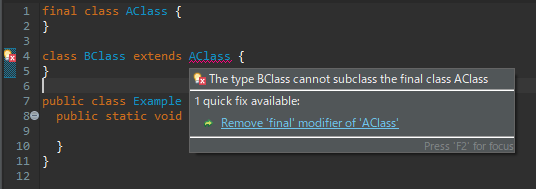

[Java] 13. 抽象クラス(abstract)と継承禁止(final)
こんにちは。明月です。
この投稿はJavaで抽象クラス(abstract)と継承禁止(final)に関する説明です。
私が以前にクラス継承とインタフェース(interface)に関して説明したことがあります。
link - [Java] 8. クラスの継承とthis、superキーワードの使い方
link - [Java] 12. インタフェース(interface)
この抽象クラスはインタフェース(interface)と一般クラスの機能を混ぜていると思えばよいと思います。
インタフェースはクラスの割り当て(new)することはできません。理由は複数継承のため、メモリ構成するメンバー変数がないし、それを処理する関数の処理が実装されてないからです。
クラスはメンバー変数や関数の実行するところまで実装されています。なのでクラスはメモリに割り当てができます。
抽象クラスは基本的に構造は一般クラスと同じです。でも、クラスを生成する時に、直接にインスタンスを生成することではなく、継承する部分まで考えてクラスを作る場合があります。つまり、インタフェースみたいに実行領域は継承されるクラスに任せて定義だけ実装して作成することができます。実行領域がない関数があるので抽象クラスはクラス割り当て、つまりインスタンス生成はできません。または抽象クラスは実行領域があるので複数継承ができません。
抽象クラスの継承はextendsキーワードを使います。
import java.util.ArrayList;
import java.util.List;
// 抽象クラスAbstractClass
abstract class AbstractClass {
// 関数設定
public void run() {
// print()関数を呼び出す。
print();
}
// print()は関数名だけ定義して実装領域は継承されるクラスに任せる。
protected abstract void print();
}
// AbstractClassを継承した。
class AClass extends AbstractClass {
// AbstractClassクラスのprint関数は関数名だけ定義しているので再定義しなければならない
@Override
protected void print() {
// コンソール出力
System.out.println("AClass print!");
}
}
//AbstractClassを継承した。
class BClass extends AbstractClass {
// AbstractClassクラスのprint関数は関数名だけ定義しているので再定義しなければならない
@Override
protected void print() {
// コンソール出力
System.out.println("BClass print!");
}
}
// 実行クラス
public class Example {
// 実行関数
public static void main(String... args) {
// リスト宣言
List<AbstractClass> list = new ArrayList<>();
// AClassインスタンス生成
list.add(new AClass());
// BClassインスタンス生成
list.add(new BClass());
// リストからクラスを取得
for (int i = 0; i < list.size(); i++) {
// インスタンス取得
AbstractClass clz = list.get(i);
// run関数実行
clz.run();
}
}
}

上のソースを見ればAbstractClassにprintという関数名だけ定義して実行領域は実装してないです。
AbstractClassを継承したAClassやBClassからprint関数を再定義されます。
上のソースを見てもクラスの属性を持っているしインタフェースの属性も持っていることに見えます。
それなら抽象クラスは複数継承もできないし、一つの完全体のクラスにもありません。そうなれば、抽象クラスを作る意味があるかと疑問があります。
変数タイプで使うみたいにListジェネリックタイプでAbstractClassを使ってAClassとBClassのインスタンスを集まって扱いました。でも、この機能はインタフェースだけでも十分にできる機能です。
でも、実務に行くと抽象クラスはすごくよく使います。インタフェースよりも使います。理由はOOPの特性のカプセル化のせいです。
上の例を見てもmain関数ではAClassのprint関数を直接に呼び出せないです。アクセス修飾子によってアクセスができないです。protectedタイプなので。
AbstractClassのrun関数をよってprint関数が呼び出せるです。クラスを生成する時、カプセル機能で関数を隠せなければならないけど、インタフェースは基本的にpublicなのでできないです。そのため、抽象クラスがよく使います。
// 抽象クラスAbstractClass
abstract class AbstractClass {
// メンバー変数
private int data;
// 実行関数
public void run() {
// init関数を呼び出して初期データを受け取る。
this.data = init();
// メンバー変数に10を掛ける。
this.data = this.data * 10;
// execute関数を呼び出してデータを計算して受け取る。
this.data = execute(this.data);
// メンバー変数の10を掛ける。
this.data = this.data * 10;
// print関数呼び出す。
print(this.data);
}
// 抽象メソッド定義
// 初期データを受け取る関数
protected abstract int init();
// パラメータのデータを計算して受け取る関数
protected abstract int execute(int data);
// データを出力する関数
protected abstract void print(int data);
}
// AbstractClassを継承した
class AClass extends AbstractClass {
// init関数を再定義
@Override
protected int init() {
// 1の値をリターンする。
return 1;
}
// execute関数を再定義
@Override
protected int execute(int data) {
// データを5で割る。
return data / 5;
}
// print関数を再定義
@Override
protected void print(int data) {
// データをコンソールに出力
System.out.println("Data - " + data);
}
}
// 実行クラス
public class Example {
// 実行関数
public static void main(String... args) {
// AClassクラス宣言
AClass clz = new AClass();
// run関数を実行
clz.run();
}
}

上の例を見ればAbstractClassはカプセル化でrun関数だけ外部で呼び出すことができます。メンバー変数はprivateタイプだし、処理関数はすべてprotectedタイプです。
AbstractClassを継承するクラスによって結果を変わることができます。 上の例見たいに共通クラスを生成して継承したクラスから業務のプログラムを作成することにすると基本構造は似てますが、クラスによってデータをすべて別に出ると思います。
実務の例を考えばDatabase関連クラスを作ることができます。
Database関連クラスはデータベースを接続してデータを検索するかデータを格納するプロシージャ(実行手順)がありますが、初期のデータベース情報がなければ実行ができません。なので抽象クラスを利用してデータベースは後継承したクラスで設定して優先的に実装することを作業することができます。
抽象クラスは使うことではクラスの前にabstractキーワードが必要です。内部関数ではabstract関数を作成します。abstract関数がなくてもクラス自体がエラーになることではないですが、抽象クラス宣言したことに意味がないです。
今までクラスからクラスを継承することで確認します。でも、クラスをもう継承できないようなキーワードもあります。
// クラス宣言 (class前にfinalキーワードを入れて継承禁止にする。)
final class AClass {
}
// クラス宣言 (AClassを継承する。)
class BClass extends AClass {
}
//実行クラス
public class Example {
//実行関数
public static void main(String... args) {
}
}

BClassはAClassを継承しようと思いましたが、クラスの前にfinalキーワードがあるので継承できませんというコンパイルエラーに表示します。
このfinalキーワードは継承禁止だけではなく、変数を定数に宣言する時も使います。
link - [Java] 2. 変数と定数の宣言方法、そして原始データタイプとクラスデータタイプの差異
ここまでJavaで抽象クラス(abstract)と継承禁止(final)に関する説明でした。
ご不明なところや間違いところがあればコメントしてください。
- [Java] 20. iterator(for-each)とStream APIを使う方法2019/09/04 20:11:28
- [Java] 19. ラムダ(Lambda)を使う方法2019/09/03 20:37:14
- [Java] 18. 匿名クラス(Anonymous class)とクロージャ(closure)2019/09/02 20:30:34
- [Java] 17. ジェネリックタイプ(Generic type)を使う方法2019/08/27 19:05:44
- [Java] 16. 例外処理(try~catch~finally, throw)を使う方法2019/08/26 23:40:29
- [Java] 15. 列挙型(バイナリデータビット演算子の使用例)2019/08/23 19:46:10
- [Java] 14. オブジェクト指向プログラミング(OOP)の4つ特性(カプセル化、抽象化、継承、多相化)2019/08/22 20:08:37
- [Java] 13. 抽象クラス(abstract)と継承禁止(final)2019/08/22 00:06:20
- [Java] 12. インタフェース(interface)2019/08/20 23:46:23
- [Java] 11. StringのhashCodeとequals、そしてtoStringの再定義(override)2019/08/20 00:42:04
- [Java] 10. メモリの割り当て(stackメモリとheapメモリ、そしてnew)とCall by reference(ポインタによる参照)2019/08/07 20:53:34
- [Java] 9. アクセス修飾子とstatic2019/08/06 20:22:48
- [Java] 8. クラスの継承とthis、superキーワードの使い方2019/08/05 23:22:58
- [Java] 7. クラスを作成する方法(コンストラクタを作成方法)2019/08/02 22:45:42
- [Java] 6. 関数の使い方(関数のオーバーロードと再帰的な方法について)2019/08/01 20:40:40
- [Design pattern] 3-4. イテレータパターン(Iterator pattern)2021/11/15 19:31:28
- [CentOS] Linux環境(CentOS)でCassandra(NoSQL DB)をインストールする方法(DBeaverブラウザでNoSQL使い方)2021/11/12 17:33:58
- [Design pattern] 3-3. コマンドパターン(Command pattern)2021/11/05 17:01:42
- [Window] apache-tomcatでロードバランシング(Load balancing)する方法とセッションクラスタリング（セッション共有）2021/11/05 16:58:45
- [Window] Apacheでmod_jkとmod_proxyの差異、apacheでtomcatのwebsocketのプロキシフォーワードする方法2021/11/05 16:55:05
- [PHP] Apache環境の同じホスト中でPHPとJava(Servlet)を同時に起動、運用する方法2021/11/05 16:52:04
- [C#] 61. ウィンドウフォーム(Window form)でスレッド(Thread)を使い方、クロススレッド問題解決2021/11/04 19:29:51
- [Design pattern] 3-2. 責任の連鎖パターン(Chain of responsibility pattern)2021/11/04 19:27:58
- [Design pattern] 3-1. ストラテジーパターン(Strategy pattern)2021/11/03 18:38:52
- [C#] 60. ウィンドウフォーム(Window form)のイベント設定する方法2021/11/02 21:18:08
- [Design pattern] 2-7. ファサードパターン(Facade pattern)2021/11/02 19:32:31
- [Design pattern] 2-6. プロキシパターン(Proxy pattern)2021/11/01 19:42:44
- [Design pattern] 2-5. フライウェイトパターン(Flyweight pattern)2021/10/29 19:48:27
- [C#] 59. ウィンドウフォーム(Window form)にコントロール(Control)を使い方法2021/10/29 19:45:43
- [Design pattern] 2-4. デコレーターパターン(Decorator pattern)2021/10/28 20:11:13